2022 November (Nov) · Paper 1 · Question 8 (5 marks)
Topic codes: 2.142.4
2023 November TZ2 · Paper 1 · Question 9 (8 marks)
Topic codes: 2.145.13
f(x)=sin²(kx)/x² for x≠0, k∈ℝ⁺: show f is even; given lim_{x→0}f(x)=16, find k
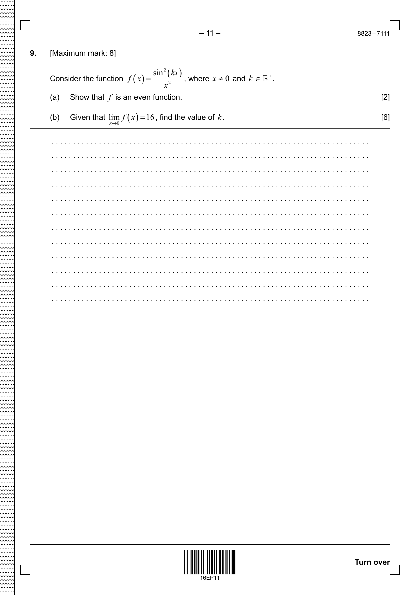
Keywords: even function, limit, trigonometric limit, small angle
2024 May TZ1 · Paper 1 · Question 9 (6 marks)
Topic codes: 2.142.165.11
Graph transformations: sketch y=|f(|x|)|, y=f(x) for odd function, evaluate integrals
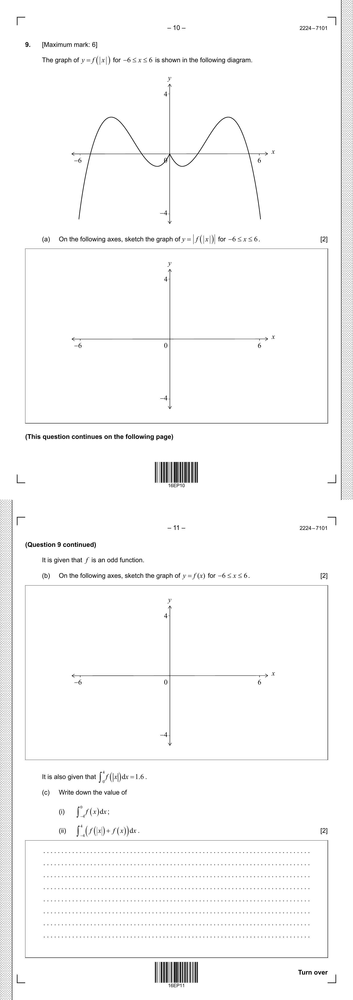
Keywords: modulus function, odd function, even function, transformation, definite integral, symmetry
2.15 Solving inequalities f(x) > g(x), graphical & algebraic
No past-paper questions in scope for this code in the current DB.
2.16 Modulus / absolute-value graphs
2022 November (Nov) · Paper 1 · Question 10 (20 marks)
Topic codes: 2.163.63.85.6
f(x)=cos²x - 3 sin²x on [0,π]: roots; f'(x); points where f'(x)=0; sketch |f(x)|; solve |f(x)|>1
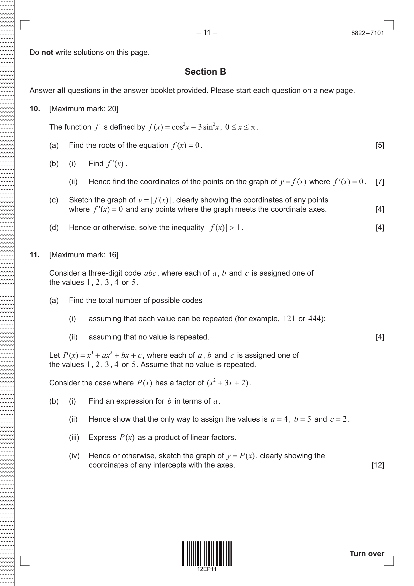
Keywords: double angle, trigonometric equation, modulus inequality, graphical analysis
2023 May TZ1 · Paper 1 · Question 8 (7 marks)
Topic codes: 2.112.16
Graph transformation g(x)=f(|x|): sketch and find k for (g(x))^2=k
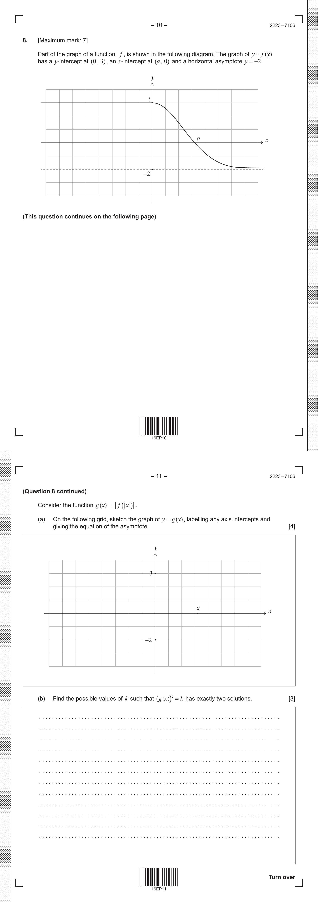
Keywords: modulus function, transformation, reflection, asymptote, composite function
2023 May TZ2 · Paper 2 · Question 8 (7 marks)
Topic codes: 2.162.2
Function range: find range of f(x), solve modulus equation |f(x)|=k
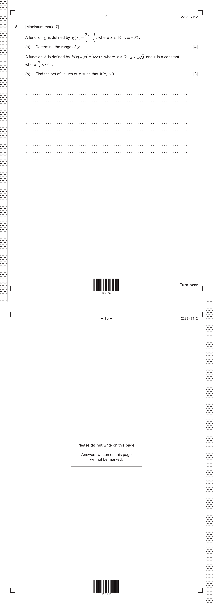
Keywords: function range, modulus function, solving equations, domain
Exponential Functions (AAHL Book 2, Ch2) — growth/decay, e^x, modelling
1.5 Exponents: index laws; rewrite to common base
2021 May TZ2 · Paper 2 · Question 5 (7 marks)
Topic codes: 1.5
Carbon-14 decay A=A_0 e^(-kt): show A_0=100; show k=ln 2/5730; time for 25% to decay
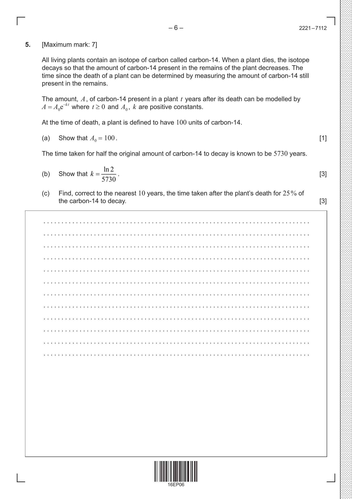
Keywords: exponential decay, half-life, logarithm
2022 November (Nov) · Paper 2 · Question 4 (7 marks)
Topic codes: 1.52.9
P(t)=15000 e^(kt), k<0; population decreased 11% from 2014-2022: estimate population on 1 Jan 2041
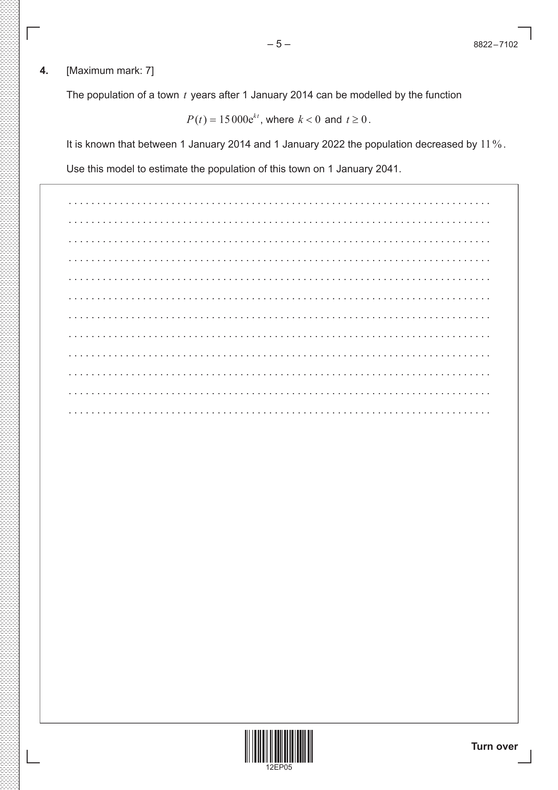
Keywords: exponential decay, logarithm, model prediction
2024 May TZ2 · Paper 1 · Question 10 (16 marks)
Topic codes: 1.21.31.5
Arithmetic a,p,q… show 2p-q=a; geometric a,s,t… show s²=at; case q=t=1 show p>1/2; sequences with a=9, q=t=1; new arithmetic sequence u_n = arithmetic + ln(geometric); show Σu_i = 90 + 25 ln 3
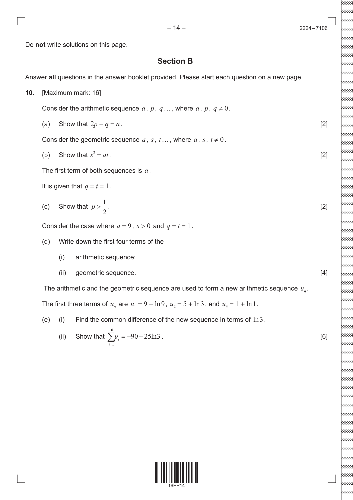
Keywords: arithmetic sequence, geometric sequence, logarithm, common difference, sigma notation
2024 May TZ2 · Paper 2 · Question 3 (6 marks)
Topic codes: 1.51.7
Loudness L=10 log₁₀(I·10¹²): find intensity of S2 (=2I); loudness of S2; intensity I when L=115
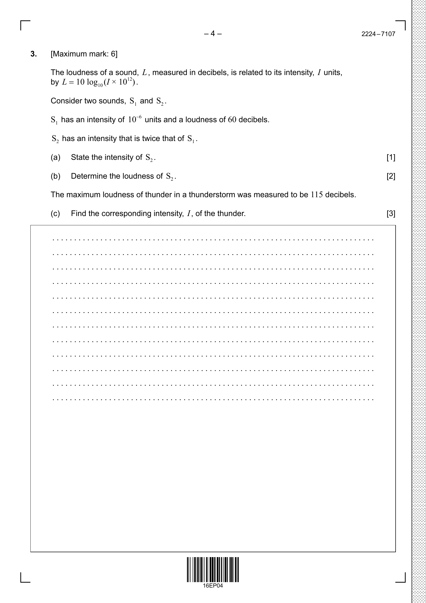
Keywords: logarithm, decibels, exponential equation
2024 November (Nov) · Paper 2 · Question 5 (5 marks)
Topic codes: 1.52.7
h(x)=log₁₀(4x²-rx+r-1) defined for all x∈ℝ → discriminant < 0; find range of r
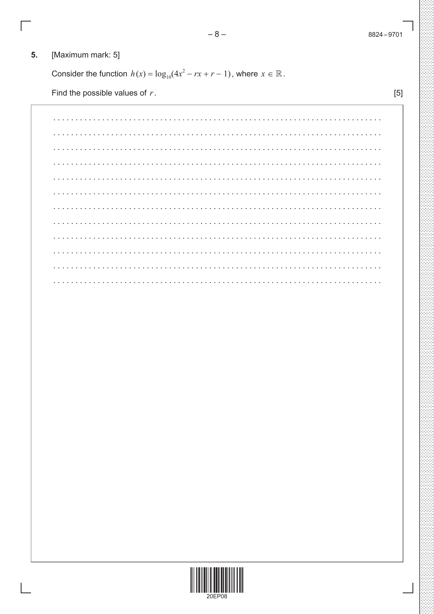
Keywords: logarithm domain, discriminant, quadratic positive
2024 November (Nov) · Paper 2 · Question 10 (15 marks)
Topic codes: 1.54.45.6
Canada population data: linear regression p=at+b; reliability of extrapolation; Benoit's exponential B(t)=33.5(1.005)^t; Cecilia's logistic C(t)=62/(1+e^(-0.02t)); compare B(100), C(100), max difference, B'(75), C'(75)
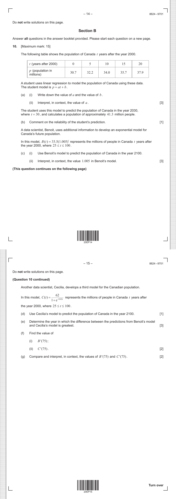
Keywords: linear regression, exponential model, logistic model, extrapolation, rate of change
2.9 Exponential & log functions: graph, asymptote, inverse
2021 May TZ2 · Paper 1 · Question 4 (9 marks)
Topic codes: 2.95.4
f(x)=ln(x²-16) for x>4: x-intercept a; tangent at B has gradient 1/3 — find x_B
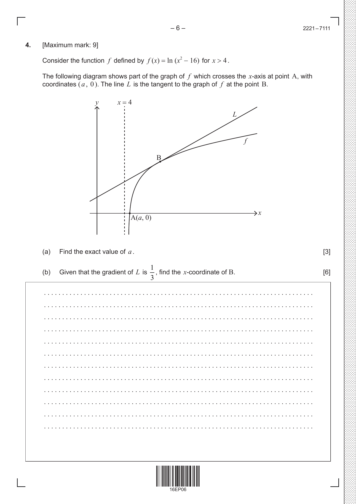
Keywords: logarithm, x-intercept, tangent, derivative
2023 May TZ1 · Paper 1 · Question 4 (6 marks)
Topic codes: 2.72.9
Find range of k for e^(2x) + ln(k) = 3e^x to have real solution
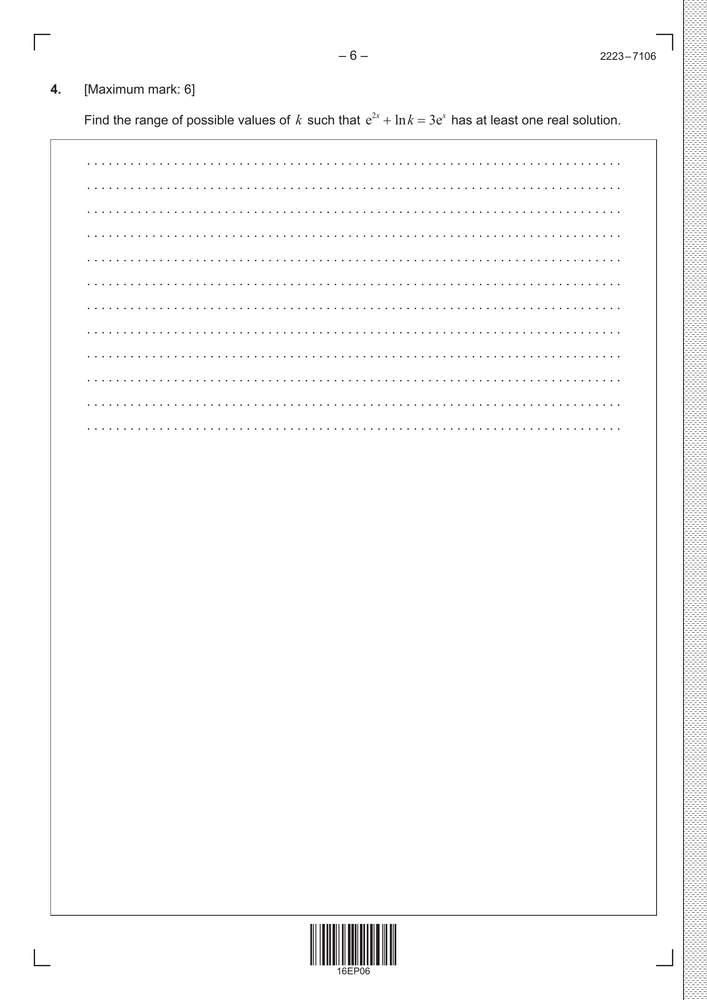
Keywords: exponential equation, discriminant, quadratic in e^x, logarithm, real solutions
2023 May TZ2 · Paper 3 · Question 1 (24 marks)
Topic codes: 1.62.102.95.6
Investigation: intersections of y=log_a(x) and y=x, find values of a, prove results
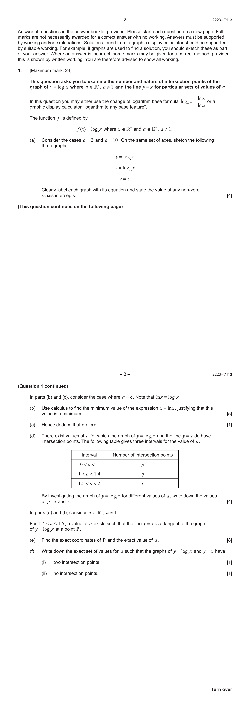
Keywords: logarithm, exponential, intersection, investigation, proof, graphical analysis
2023 November TZ1 · Paper 1 · Question 10 (15 marks)
Topic codes: 2.72.9
Logs f(x)=ln(2x-9), g(x)=2lnx-lnd: vertical asymptote of g; show intersection gives x^2-2dx+9d=0; range of d; case d=10 find q-p in form a√b
Keywords: logarithm, vertical asymptote, intersection, discriminant, quadratic, surd form
2023 November TZ2 · Paper 1 · Question 10 (15 marks)
Topic codes: 2.102.72.9
f(x)=ln(2x-9), g(x)=2 ln x - ln d: vertical asymptote of g; show intersection gives x²-2dx+9d=0; show d²-9d>0; range of d; case d=10 find q-p in form a√b
Keywords: logarithm function, asymptote, intersection, discriminant, quadratic in x
2.10 Solving exponential equations / models in context
2021 November (Nov) · Paper 2 · Question 9 (15 marks)
Topic codes: 2.103.7
Dungeness tide H(t)=a sin(b(t-c))+d: high tide 04:30 then 12 hours later, range 2.2 to 6.8 m; show b=π/6; find a, d, smallest c; height at 12:00; hours over 24h tide >5 m; Folkestone tide 50 min earlier — equation
Keywords: sinusoidal model, amplitude, phase shift, interval condition
2024 May TZ1 · Paper 2 · Question 10 (16 marks)
Topic codes: 2.103.73.85.6
Tides H(t)=1.63 sin(0.513(t-8.20))+2.13 for Sule Skerry; another tide model for Rockall; find when heights equal
Keywords: sinusoidal model, period, rate of change, trigonometric equation
2024 May TZ2 · Paper 2 · Question 1 (6 marks)
Topic codes: 2.105.11
Functions f(x)=1-x², g(x)=e^(2x) on -1≤x≤0: find a,b where they intersect; area enclosed
Keywords: intersection, area between curves, definite integral
2024 November (Nov) · Paper 2 · Question 1 (7 marks)
Topic codes: 2.102.7
f(x)=11√x − x²/11 for 0≤x≤20: f(0), f(20); two roots; sketch graph
Keywords: function evaluation, roots, graph sketching, rational
Logarithms (AAHL Book 2, Ch3) — log laws, base change, equation solving
1.7 Log laws; change of base; solving exponential/log equations
2021 November (Nov) · Paper 1 · Question 3 (5 marks)
Topic codes: 1.7
Solve log₃(2x²)·log₃(x)=½(log₃(x))²+1·log₃(3x⁴) for x>0 (or similar log eq)
Keywords: logarithm laws, change of base, log equation
2021 November (Nov) · Paper 2 · Question 6 (8 marks)
Topic codes: 1.61.72.12
Prove (p+q)³ - 3pq(p+q) = p³+q³; equation 2x²-5x+1=0 with roots α, β: without solving, find m, n for x²+mx+n=0 with roots 1/α³ and 1/β³
Keywords: algebraic identity, vieta, transformed roots
2022 May TZ1 · Paper 1 · Question 10 (18 marks)
Topic codes: 1.21.31.7
Series ln x + ln x^(1/p) + ln x^(1/p²) + ... case geometric: show p=±1/3, convergence; given p>0 and S∞=3+√3 find x; case arithmetic: show p=2/3, find d=k ln x; sum to n terms = ln(1/(3x)); find n
Keywords: geometric series, arithmetic series, logarithm, convergence, common difference
2022 November (Nov) · Paper 1 · Question 3 (5 marks)
Topic codes: 1.7
Show (a²+1/2)² - (a²-1/2)² = 2a²; right triangle sides a, (a²-1/2), (a²+1/2): area in terms of a
Keywords: pythagorean triple, area of triangle, algebraic identity
2024 May TZ1 · Paper 1 · Question 2 (5 marks)
Topic codes: 1.7
Logarithms: given log_10(a)=1/3, find log_10(1/a) and log_1000(a)
Keywords: logarithm, logarithm laws, change of base, reciprocal
2024 May TZ2 · Paper 1 · Question 2 (5 marks)
Topic codes: 1.72.7
Solve 3·9^x + 5·3^x - 2 = 0 (quadratic in 3^x)
Keywords: exponential equation, quadratic substitution, logarithm